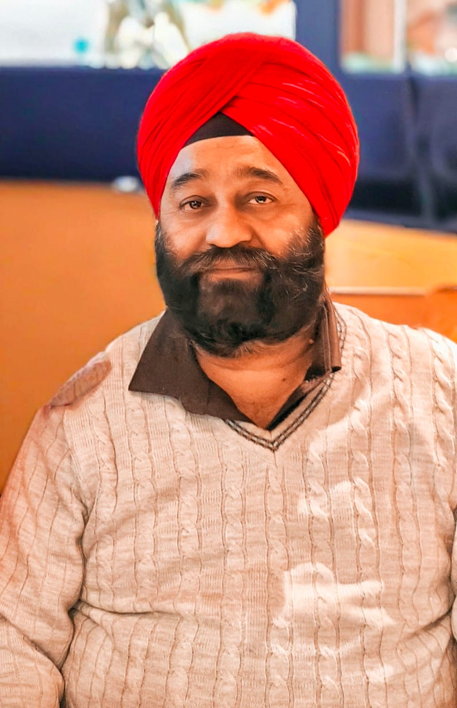

1970 – 2025

Gurdeep Singh Saluja was a kind-hearted, hardworking man who dedicated his life to his family and community. He was known for his generosity, wisdom, and unwavering support for those around him. His presence brought warmth and positivity to every space he entered.
Admitted for a routine gallbladder procedure. Initial condition was stable, with doctors assuring a simple treatment plan.
Surgery caused unexpected complications. Post-operative care was inadequate, with visible lapses in hygiene and monitoring.
Untrained personnel performed a VAC wound closure procedure privately, bypassing hospital protocols. Family was asked to pay off the books.
Infections worsened due to poor care, leading to organ failure. Despite repeated pleas, proper medical interventions were delayed.
After nearly two months of suffering, Gurdeep Singh Saluja passed away. A life that could have been saved was lost to negligence.
This is to inform you that my father passed away due to gross medical negligence at your hospital under Dr. Suresh Kumar Singhvi.
Here’s what happened:
On top of this: